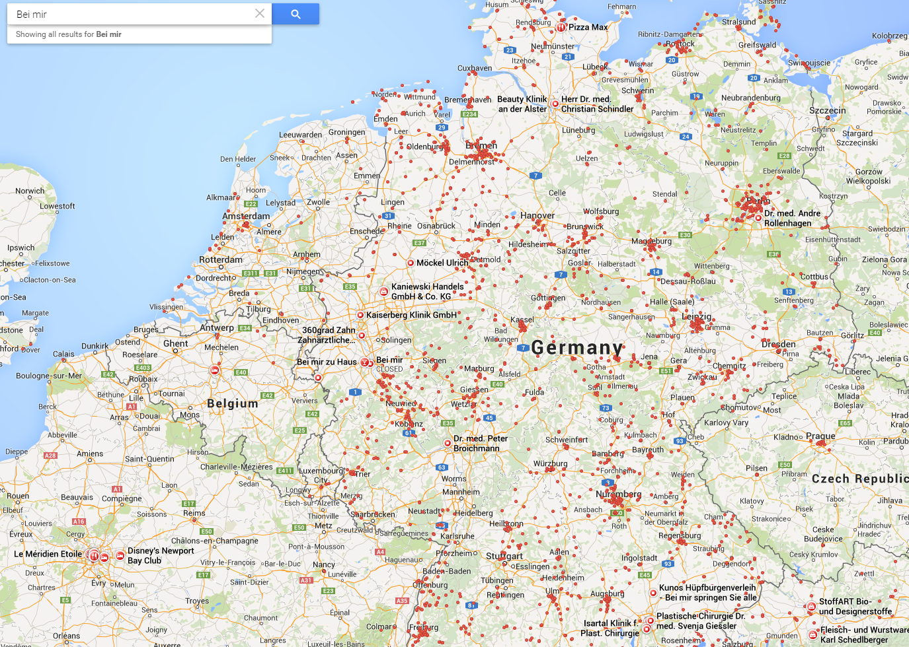

In diesem Beitrag ist auch weiterhin ein Text enthalten damit es nciht sooo leer ist. Weterhin haben wir auch einen Link: klick mich Und noch etwas weiteren Text.
Das ist ein Beitrag ohne einen Titel. Muss ja auch nicht immer sein oder? Der Rest des Beitrags sieht eigentlich genauso aus wie mit Titel nur halt ohne.
Untertitel
Dafür hat dieser Beitrag aber einen eigenen Untertitel :)Dieser Beitrag enthält neben ein wenig text auch ein Zitat:
Das ist ein richtig witziges Zitat das ihr unbedingt kennen solltet!
Sebastian Gross
War das nicht ein spitzen Zitat?
Dieser Beitrag ist richtig schön bunt da er eine tolle Grafik enthält
Was wäre die Welt nur ohne so schöne kleine grafiken oder?
Dieser Beitrag ist besonders cool da er einen ganzen Tweet einbettet:
So etwas wie Mobile Docker 😉 Mobiles OS: Microsofts Idee eines Multi-Boot-Betriebssystems http://t.co/JY75udZXqF
Hans-Peter Schelian (@SchelianHP) April 13, 2015Einträge können natürlich auch Videos enthalten, so wie dieses YouTube Video:
Oder dieses Video von Vimeo:
Natürlich kann man auch Code posten:
<Labor>
<AIX ImageIndex="1" Expanded="true">
<coblpo63 ImageIndex="6" Expanded="false" />
<cof1av5 ImageIndex="6" Expanded="false" />
<q4de8pcoh20 ImageIndex="6" Expanded="false" />
</AIX>
<Solaris ImageIndex="1" Expanded="true">
<q4de8psa913 ImageIndex="6" Expanded="false" />
<q4de8psa914 ImageIndex="6" Expanded="false" />
<tmv1726 ImageIndex="6" Expanded="false" />
</Solaris>
</Labor>Oder etwas Java code:
/// <summary>
/// Mit dem Ausführen dieser Methode beginnt der Download
/// dann durch das Ausführen der Stop()-Methode wieder
/// </summary>
public static int[][] getTransposedMatrix(int[][] matrix){
if(!isValidMatrix(matrix)){return null;}
if(matrix.length < 1 || matrix[0].length < 1){return null;}
int[][] transponiert = new int[matrix[0].length][matrix.length];
for(int z=0;z<matrix.length;z++){
for(int s=0;s<matrix[z].length;s++){
transponiert[s][z] = matrix[z][s];
}
}
return transponiert;
}Dieser Artikel hat ein Vine Video eingebunden: